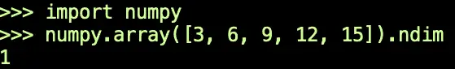

Programming and Math: A Brief Translation Guide
If you’ve studied math and then learned to program, or if you’re a programmer studying math, you may have been amused (or perhaps confused) by the interesting language similarities and differences between the two fields.
Vexed by Vectors
Most of us first encounter geometric vectors in public school, as those interesting little arrows that include a magnitude and direction. The word stems from the Latin word for “carrier”. A magnitude and direction “carry” one point to another.
The term vector appeared again in a computing context in the 1990s, when the authors of the C++ Standard Template Library included a dynamic array implementation in the library called a vector, which almost made sense in the linear algebra sense of the word vector. In this case, we’re referring to an ordered set of numbers, which (unlike a geometric vector) might just be a set or a tuple of numbers.
The authors of the library needed a term that wasn’t “list” (since a linked list structure was not how it was implemented) and wasn’t “array”, which was a fixed-length (non-growable) area of contiguous memory, which C and C++ developers had already been using for years.
Soothed by Scalars
If you managed to learn to program before you took a lot of math, you might have wondered why scalars are called scalars. In programming, the term applies to single values, as opposed to composites. Floats and integers are scalars, for example, while lists and dictionaries are not.
The term becomes a bit loose and fuzzy for certain values, however. Is a string or an object of a class a scalar? The answer very much depends on the context and how you’re thinking about it. A string is a scalar if you’re thinking about putting it in a list. If you’re slicing it, however, it starts to behave more like a vector now.
The heading promised something soothing, so here it is. In mathematics, a scalar has a more precise meaning. It’s something that scales something else. The number 3 is a scalar, for example, so whatever our good friend, x, turns out to be, you can be sure that 3x means there are three of them. (I offer for your consideration: x = “blind mice”, x = “stooges”, or x = “musketeers”). In linear algebra and Euclidean geometry, multiplying a scalar by a vector gets you a vector that’s scaled. It grows or shrinks, or maybe it flips but stays in the same line.
Again, be of good cheer. In general, scalars scale, they don’t flip. Besides, we couldn’t call them “flippers”, for fear of offending the dolphin community.
You’re About to Enter Another Dimension
“… a dimension not only of sight and sound but of mind. A journey into a wondrous land of imagination. Next stop, the Twilight Zone!” So began the 1950s/1960s TV series “The Twilight Zone”, narrated by the best voice in the history of television, Rod Serling. Each week’s episode featured something weird and mind-blowing.
Programmers think they know what a dimension is. Certainly, I did until recently. A one-dimensional array is indexed by a single integer. A two-dimensional array models something like a database table or a spreadsheet, or in Python, a Pandas DataFrame. NumPy arrays can have any number of dimensions, and you can create contiguous multi-dimensional arrays in most other languages, too.
My Twilight Zone moment came recently in a Linear Algebra course, where the instructor made a surprising assertion was made about the following vector (or one very like it):
v = [ 3 6 9 12 15 ]
Said the instructor: “This vector has a dimensionality of five.”
Five? Are you kidding me? Put some commas in there, and you’ve got a perfectly valid declaration for a one-dimensional Python list. Sure, it’s got five elements, or len(v) == 5.
However, if I passed that list as it’s written to a numpy.array constructor and called ndim (number of dimensions) on it, I guarantee I’ll get one as the answer. Look, here’s a proof (oh, no, don’t you get me started on “proof” – I mean a programmer proof, not a mathematical proof):

Of course, I didn’t post this “proof” in the class, because if I wanted to look dumb, I’d write a blog post. Instead, I checked the course discussion board, and sure enough, I wasn’t the first one to notice this. I also found this fascinating discussion board answer to the question: Why Do People Say “x Dimensional Vector” when Vectors Have Only One dimension? According to the person smartest enough to receive the crowd’s green check-mark of approval:
“I believe what you are referring to when you say a vector is 1 dimensional is that a vector is a rank 1 tensor. Matrices are, on the other hand, rank 2 tensors, and scalar values are rank 0 tensors.”
Bonus Prize, Wherein I Reconcile Science and Religion
Evolution is real. The earth is round. Vaccines are good for you.
Wow, that was pretty easy, but here’s one more:
The study of mathematics is an act of faith for me. I know that if I stay at it long enough, I’ll be able to make at least some educated sense from reading the Wikipedia article on tensors. For now, that article is just the curve in the other-dimensional rabbit hole that began when I wanted to learn some linear algebra.
For now, we’ll just have to be content that vector, [1 2 3 4 5], has one dimension in the C++ Standard Library and five dimensions in mathematics.
There’s no reason that should make us any tensor than we were before.